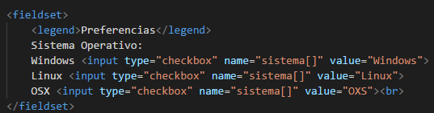
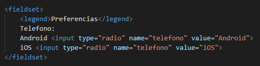

La etiqueta fieldset se utiliza para agrupar elementos relacionados en un formulario, es decir, dibuja un cuadro alrededor de los elementos relacionados. Como en la sigueinte imagen.
Permite definir una leyenda para los elementos agrupados con la etiqueta fieldset. Esta etiqueta legend debe estar dentro de la etiqueta fieldset.
Los RadioButton los utilizamos cuando queremos seleccionar un elemento entre varios elementos de un grupo porque solo deja seleccionar una opción. En cambio, los Checkbox se utilizan cuando uno o más elementos pueden ser seleccionados.
Los botones checkbox en su atributo name deben ser declarados como un arreglo
para poder enviar todas las opciones selecionadas al servidor.En cambio si no se declara así solo
sera enviada la última opción seleccionada. En el atributo value se asigna
el nombre que tendra cada checkbox de las opciones
ejemplo

Los radio button no necesitan ser declarados como un arreglo en su atributo name
porque solo se puede seleccionar uno a la vez. Al igual que los checkbox en su atributo
value se asigna el nombre que tendra cada radiobutton de las opciones

Este tipo de botones envía automáticamente el formulario en que se encuentra cuando es presionado. Es decir, cuando se pulsa el botón el navegador nos lleva a la dirección web indicada en el campo action y al mismo tiempo envía a esa dirección los datos que contiene el formulario. Para indicar que se trata de un botón de envío dentro de esta etiqueta escribiremos type = "submit".
Los botones de contenido pueden ser usados como botones de envío o restablecimiento, o bien pueden
no tener ninguna acción preestablecida dependiendo del valor de su atributo "type". Su característica
principal es que se puede insertar contenido HTML dentro de ellos y así darles un aspecto atractivo,
como imágenes o colores de fondo, etc.
Los botones de contenido se insertan con la etiqueta button, usando el valor "button",
"submit" o "reset" en su atributo "type". Un valor button supondrá que el botón no hará nada en respuesta a un click.
El atributo name especifica el nombre de un elemento input.El atributo name se utiliza para referenciar datos de formulario después de enviar un formulario.
El atributo value especifica el valor de un elemento input. El atributo value se utiliza git de forma diferente para diferentes tipos de entrada: